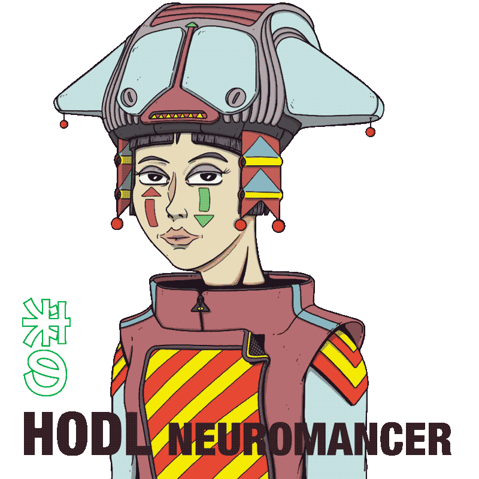

<!-- This file is not inscription-ready, there are some things you'll want to change first.

    Note: Inscribe this file as a HTML file! not as text.
  
    Credits: https://www.twitter.com/fservin Drop me some love and follow for more Bitcoin experiments

  -->
  <html>
    <head>
     
      <style>
        * {
          user-select: none;
        }
  
        html,
        body {
          overflow: hidden;
          background-color: #acccc4;
          margin: 0;
          position: fixed;
          width: 100%;
          height: 100%;
          
        }
  
        canvas {
          width: 100%;
          height: 100%;
          
        }
        .sticky-footer {
            position: sticky;
            bottom: 0px;
            text-align: center;
            font-family: 'Alata', sans-serif;
            font-size: 0.8rem;
            pointer-events: none;
          }
          .sticky-art {
    width: 100vw;   /* 80% of viewport width */
    height: 100vw;  /* 80% of viewport width, keeping the aspect ratio */
    display: block;
    margin: 0 auto;  /* center the image horizontally */
}

/* For a horizontal screen */
@media (orientation: landscape) {
  .sticky-art  {
        width: 100vh;   /* 80% of viewport height */
        height: 100vh;  /* 80% of viewport height, keeping the aspect ratio */
    }
}
      </style>
      
  
    
    </head>
    <body>
      <!-- This canvas is the one making the magic with visuals -->
      <canvas></canvas>
      
      <div class="sticky-footer">
        
      </div>
      <script src="https://ord.io/content/3af8500b444c7f589fca666fe317e1f95c7226d49dc23f8a4b86093f01f3e7adi0"></script>
      <script>
        // Simulation code

           config = {
              BACK_COLOR: { r: 172, g: 204, b: 196 }, // Update this color to have different backgorund in your simulation. 
              TRANSPARENT: false, //make the whole background transparent if it is "true".
              SIM_RESOLUTION: 128,
              DYE_RESOLUTION: 1024, //update this to reduce the amount of pixels in the effect, range from 128 to 1024
              CAPTURE_RESOLUTION: 512,
              DENSITY_DISSIPATION: 0.6,
              VELOCITY_DISSIPATION: 0.1,
              PRESSURE: 0.63,
              PRESSURE_ITERATIONS: 20,
              CURL: 3,
              SPLAT_RADIUS: 1,
              SPLAT_FORCE: 6000,
              SHADING: true,
              COLORFUL: false,
              COLOR_UPDATE_SPEED: 10,
              PAUSED: false,
              BLOOM: true,
              BLOOM_ITERATIONS: 8,
              BLOOM_RESOLUTION: 256,
              BLOOM_INTENSITY: 0.8,
              BLOOM_THRESHOLD: 0.6,
              BLOOM_SOFT_KNEE: 0.7,
              SUNRAYS: true,
              SUNRAYS_RESOLUTION: 196,
              SUNRAYS_WEIGHT: 1.0,
          }
          function simulateSpacebarKeyStroke() {
              // Generate a random time between 100ms (0.1s) and 5000ms (5s)
              const randomTime = Math.random() * (20000 - 100) + 5000;

              // Use setTimeout to wait for the random time
              setTimeout(() => {
                  // Directly push the value onto the splatStack to emulate the space press
                  splatStack.push(parseInt(Math.random() * 20) + 5);

                  // Call the function again to simulate the next keystroke
                  simulateSpacebarKeyStroke();

              }, randomTime);
          }

          // Start the simulation when the page loads
          window.onload = function() {
              simulateSpacebarKeyStroke();
          };

      </script>
      
    </body>
  </html>
  